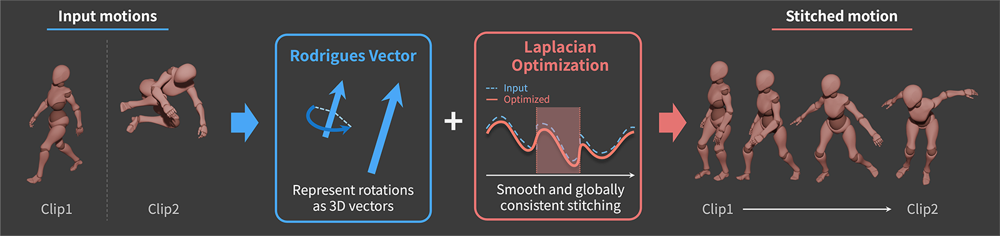

本研究では，大きな姿勢差をもつ複数のモーションクリップを滑らかに接続するための モーション接続手法を提案します．提案手法では，関節回転をロドリゲスベクトルとして 表現し，モーション接続をラプラシアン最適化問題として定式化します．各モーションの 局所的な時間変化を保持しながら接続部を平滑化することで，大きなブレンド区間に 依存せず，自然なモーション列を合成できます．さらに，ロドリゲスベクトル表現における 不連続性の影響を分析し，実データにおいて安定したモーション接続が可能であることを 確認しています．

提案モーション接続フレームワークの概要． ロドリゲスベクトル表現は，関節回転を3次元ベクトルとして扱えるため， 回転時系列に対してラプラシアン最適化を適用しやすいという利点があります． 提案手法では，元のモーションの局所的な特徴を保持しながら接続部を補正し， 姿勢差が大きい動作間でも自然で滑らかな遷移を生成します．
このデモでは，BlenderのAuto
Blendと，Blenderアドオンとして実装した提案手法を比較します．
デモ中では，Blender上で提案手法を実行する流れも示しています．
以下は公開前の仮BibTeXです．DOIリンクの公開後に更新予定です．
@inproceedings{higasayama2026rodrigues_motion_stitching,
title = {Smooth Motion Stitching via Laplacian Optimization in Rodrigues Vector Space},
author = {Higasayama, Ryosuke and Todo, Hideki and Gwak, Jongseong},
booktitle = {Proceedings of NICOGRAPH International 2026},
year = {2026},
note = {To appear}
}Paperリンクは準備中です．BibTeXはDOIリンク公開後に更新予定です．関連資料は順次更新予定です．